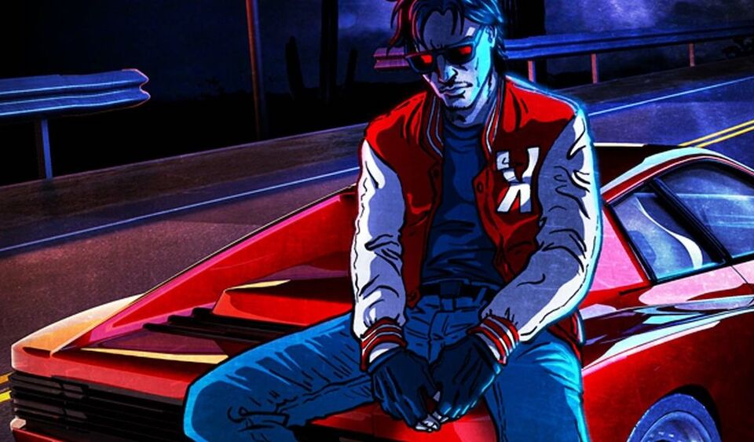
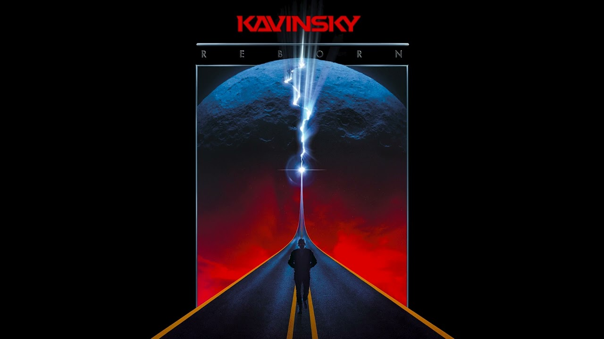

”Nightcall” de Kavinsky, sortie en 2010 et rendue célèbre par la bande originale du film ”Drive”, incarne une atmosphère nocturne et futuriste, mêlant synthwave rétro et électro moderne. Le morceau, avec ses sonorités synthétiques et son ambiance sombre, évoque une esthétique cybernétique et urbaine, souvent associée aux visions futuristes des années 1980. La voix robotisée de Kavinsky dans la chanson renforce cette idée de dialogue entre l’humain et la machine, symbolisant l’émergence d’un futur technologique où l’artificialité et l’émotion se mêlent.
“Nightcall” capte parfaitement l'essence d’un futur rêvé à travers une esthétique rétro-futuriste, où les sons évoquent à la fois nostalgie et anticipation d’un monde en mutation. L’ambiance sonore du morceau, mélancolique mais pleine d'énergie, pourrait tout à fait accompagner un concept car glissant dans une ville futuriste, sous des néons lumineux, dans un univers où la technologie dicte le rythme.

Le morceau ”Nightcall” s'inscrit dans la thématique de la ”Préhistoire du Futur” en jouant sur une idée similaire de transition entre l'actuel et l'avenir. Tout comme les concept cars, tels que l’Audi RSQ d'”I, Robot”, la musique de Kavinsky anticipe un futur à la fois technologique et émotionnel. Le style rétro-futuriste de ”Nightcall” rappelle que ce futur, bien qu'encore à venir, s’inspire des aspirations passées : une vision d’une époque où l’on rêvait d’intelligence artificielle, de voitures autonomes, et d’un monde hyper-connecté. La mélodie elle-même, avec ses sonorités électro et synthétiques, semble préfigurer la bande-son d'un avenir où les machines et les humains cohabitent.
De la même manière que les concept cars expérimentent de nouvelles technologies et de nouveaux designs sans encore être commercialisés, ”Nightcall” évoque un paysage sonore d’un futur qui n’existe pas encore mais dont on perçoit déjà les prémices. Cette musique et les concept cars partagent un même statut d’anticipation : ils ne sont pas des produits finis, mais des expérimentations créatives qui jettent un pont entre l’imaginaire et l’innovation. Dans ce sens, ”Nightcall” peut être considéré comme la bande-son de cette “préhistoire du futur”, où l’on commence à entendre et à voir les premières manifestations de ce que sera demain, que ce soit dans la musique ou dans la technologie.